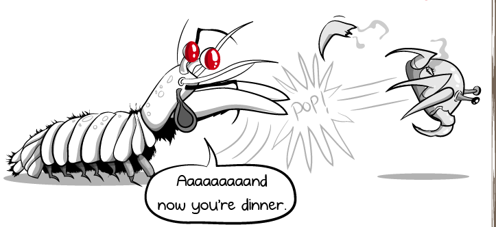
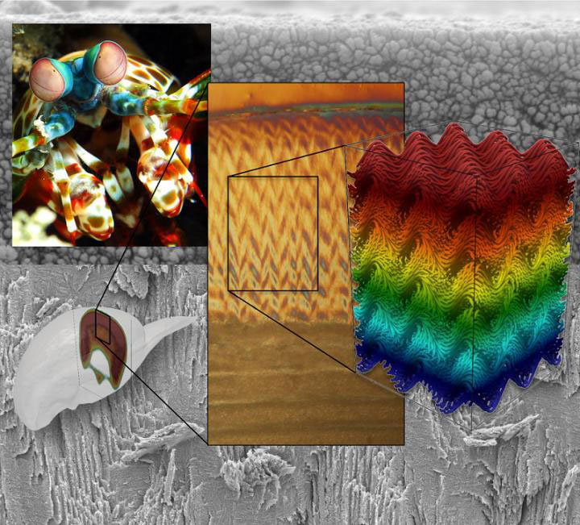

Fatos sobre o Stomatopoda
1. Odontodactylus scyllarus
Primeiro as verduras: aqui vão as informações detalhadas da classificação científica do Stomatopoda (vulgarmente chamado de "Mantis shrimp" em inglês) -- conhecidos também, no Brasil, como tamarutacas ou lacraias-do-mar.
| Reino | Filo | Subfilo | Classe | Subclasse | Ordem |
| Animalia | Arthropoda | Crustacea | Malacostraca | Hoplocarida | Stomatopoda |
2. A razão pela qual você clicou: SOCO A 80KM/H!

Imagine você dar socos repetidamente numa parede, quebrá-la e, por fim, não se machucar? Impossível, certo? Pois saiba que dessa limitação, o Stomatopoda não sofre. Como assim?
Segundo estudo recente, pesquisadores observaram que o pequeno camarão consegue desferir socos à incríveis 23 m/s! O que se traduz em mais de 80km/h!
Com essa velocidade, o camarãozinho consegue transformar sua estrutura de inseto em uma força potente empregando 1500N de força contra seu alvo!
3. Olhos +5X mais potentes!

Você talvez não saiba, mas nossos olhos conseguem perceber apenas três cores-base: vermelho, verde e azul. E o Stomatopoda? Bom, aí é humilhação: eles conseguem ver do infravermelho ao ultravioleta (ou todas as cores "existentes" no universo). Conseguem ver cores que a maioria dos outros serem não captam. Por quê?
O olho humano é composto, entre outras peças, de cones que captam apenas três cores. Já o camarãozinho tem cones que o permitem enxegar impressionantes 16 cores! Segundo o site Awesci, são capazes de ver em 3D com apenas um dos olhos.
4. Iron Shrimp Man!
Uma coisa que você pode estar pensando é: como o Stomatopoda consegue ser tão pequeno, bater tão rapidamente e com tanta força, e ainda assim não quebrar suas patas ou se machucar no processo?
Afinal, se você der um soco em alguém, não vai sair ileso de dor. Então, como é que o artrópode faz pra não se machuchar no proceso?
Bom, de acordo com os pesquisadores da Universidade Tecnológica de Nanyang, essa patas (luvinhas-de-boxe, hehe) são constituídas de uma parte super e outra inferior. A primeira de biocerâmica e a última, de biopolímero. "Ainda não entendi!" Calma que vai ficar claro.
Quando flexionadas, a camada de baixo se estica e a superior, se comprime. Percebe que isso forma uma estrutura "elástica"? Pois bem, essa característica possibilita o aramazenamento e liberação de energia, ampliando força e rapidez dos movimentos.
O negócio é tão enegenhoso que pesquisadores da Universidade da Califórnia descobriram que essas propriedades raras dessa compoisção química permitem amortecimento ao revestimento, sem dano à rigidez. Irado, eim?
Fontes:
- Awesci - Eyes of the Mantis Shrimp – Colours and Hexnocular Vision
- Aquaa3 - Conheça os 5 superpoderes do camarão mantis
- Nanowerk - Mantis shrimp inspires next generation of ultra-strong materials
- SoCientífica - Camarão mantis tem o soco mais rápido e poderoso do oceano
- The Oatmeal - Why the mantis shrimp is my new favorite animal